Trace+
See every clip your project no longer needs — and every clip it can’t do without.
And how many gigabytes of media on disk nothing is using any more.
_UNUSED — and put it back the day you need it.
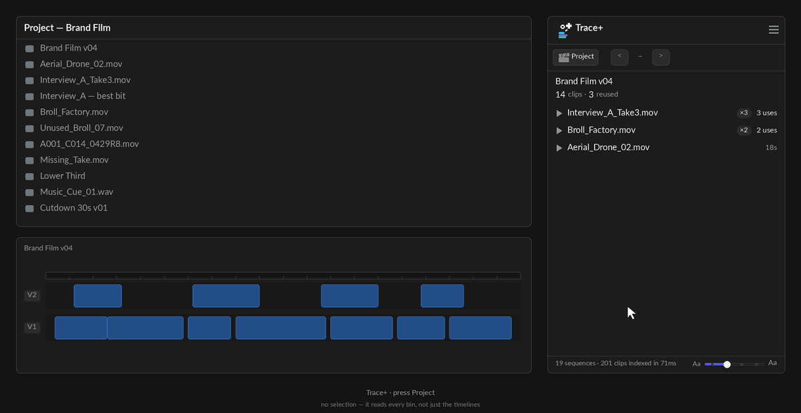
Overview
Trace answers where is this one clip used? Trace+ answers the question you cannot ask one clip at a time: what is in this project, and what of it is doing nothing?
It walks every bin, matches what it finds against every timeline, and gives you three views of the same index — one clip, one sequence, or the whole project. Then it lets you act on the answer: label it, mark it, file it away, and put it back.
Trace+ has everything Trace has. Nothing you learned in the free panel has moved, changed name, or been taken away — same gestures, same menu, same list. Trace+ adds views and actions on top. If a habit works in Trace it works here.
It never touches a file on your disk. Nothing Trace+ does can cost you footage. Most of what it does moves things — into a bin, and back out again — and Premiere undoes that with Cmd/Ctrl-Z like any other edit.
Two things it can remove from the project, each behind a button that names the count before you press it: empty bins it has proved have nothing anywhere inside them, and spare imports — an item pointing at a file another item already points at, over exactly the same in and out points. Anything covering a different part of the file is a subclip, not a copy; Trace+ refuses those and says so on screen. Every media file keeps at least one item, always.
What Trace+ is not
| Why | |
|---|---|
| A project cleaner | It does not delete, consolidate, transcode or relink. It tells you what is unused and files it out of your way; what happens after that is your decision, made in Premiere or in the Finder. |
| A media manager | It never touches a file on disk. Everything it does happens inside the Premiere project. |
| A backup or archive tool | _UNUSED is a bin, not a
location. Nothing is copied anywhere. |
| A replacement for watching your cut | It reads the timeline's structure. It has no idea whether a shot is any good. |
Requirements
- Premiere Pro 25.6.0 or newer. Trace+ is a UXP plugin; earlier versions cannot load it at all.
- macOS or Windows. Same panel, same behaviour.
- An internet connection once, to activate. After that it works offline.
Trace+ asks for full filesystem access, and Trace does not. That is so it can read how big your media files are — the number under the unused list. It reads file sizes, never file contents. See Privacy.
Install
- Double-click the
.ccxfile. Creative Cloud installs it. - Restart Premiere Pro.
- Window > UXP Plugins > Trace+.
- Drag the panel wherever you want it. It docks like any other.

Your licence
Open ☰ > Help and licence… and paste the key from your order email, then press Activate. The panel unlocks immediately.
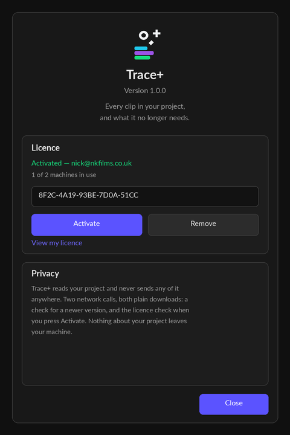
- Seats. One key covers more than one machine — the card tells you how many you are using and how many you have.
- Moving to another machine. Press Remove on the old one first. That frees the seat straight away; you do not need to email anybody.
- Offline. Activation needs the internet once. After that the panel reads a cached answer, so a laptop on a plane still works.
There is no secret key inside this panel. A licence scheme that needed one would have it extracted by the first person who looked, because a UXP plugin is readable JavaScript. The key you type is the only credential involved, and the panel's own test suite fails the build if an API key ever appears in it.
Quick start
- Open a project and click Project — the clapper-board button on the toolbar. Do not select anything.
- Wait for the walk. Trace+ reads every bin and every timeline, and says how far it has got.
- You are looking at every media file in the project. The switch above the list flips between Used and Not used.
- Tick a few rows on the Not used side and press Move to _UNUSED.
That is the whole product in four steps. Everything below is detail.
One clip, one sequence, everything
Trace+ has three views and you do not switch between them with a menu. What you have selected decides which one you get.
| Select this | Get this |
|---|---|
| A clip in the Project panel | One clip — every place it is used |
| A sequence, or just have one open | One sequence — every clip inside it, ranked by how often it is used |
| A clip on the timeline, with the timeline tile pressed | The same answer — every place that source is used, without going back to the Project panel |
| Nothing, then press Project | The whole project — every media file, used and unused |
A selection always wins. Click a clip while you are in the project view and the panel follows you to that clip. With the timeline tile pressed, a clip you click in a sequence counts as a selection too — whichever you touched last is the one on screen. Project view is sticky rather than automatic: press the button to go there, and it stays until you select something.
Why it is not automatic. Walking every bin in a four-hundred-clip project and measuring every media file is the most expensive thing this panel does. Doing it on every stray click in the Project panel would make Trace+ feel heavy for the ninety per cent of the time you are doing something else.
One clip
Identical to the free panel, with two additions.
The source coverage bar draws the whole clip as a strip with the parts you have used filled in, and tells you the longest stretch you have never touched. On a forty-minute interview that is the difference between "I used this clip" and "I used ninety seconds of it, all from the first six minutes".
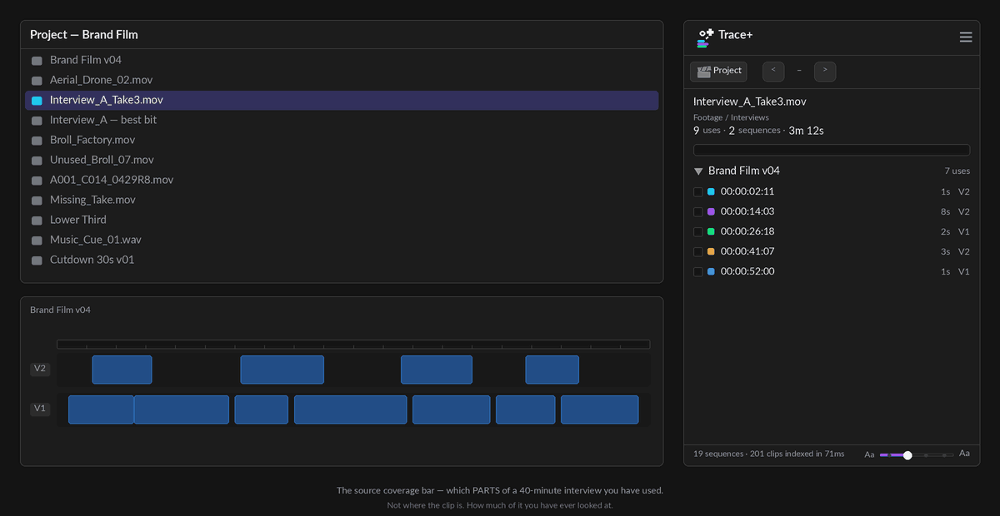
Above the list, All · Repeat · OTHER · Unused narrows what you are looking at. The first three are about the uses — see Repeats and sections. The fourth is the other side of the coin.
The parts you never used
Unused lists the spans of the source that nothing points at — the gaps between the uses. Where each one starts, how long it is, and what share of the file it is. On a forty-minute interview that is usually most of it.
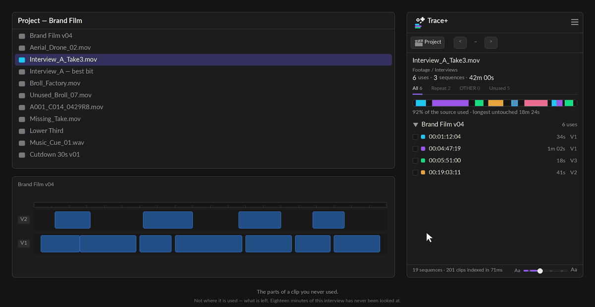
- Click a row to open that clip in the Source Monitor marked to that span — the clip's in and out points are set to the unused stretch, ready to drag straight into a timeline. No modifier, and nothing to remember.
- That writes to the project: it is one undo step, Premiere's Cmd+Z takes it back, and the status line says which span was marked.
Lengths, not timecodes, and that is deliberate. A gap is measured against the source, and Premiere does not tell a panel the frame rate of a source file — only of the sequences it has been cut into, which need not match. A timecode here would be invented, so Trace+ gives you the one number it can stand behind.
Every gap is listed, however short. On a heavily cut clip that means a lot of very small ones; the feature is for long masters and interviews, where the answer is measured in minutes.
The colour label swatches under the summary label the selected clip in one press. See Colour labels.
Clips you select in the timeline
The question this answers is the one you ask mid-edit. You are watching a cut, something looks familiar, and you want to know where else it is — without stopping, finding the clip in the Project panel, and clicking it there. Press Timeline and the sequence asks for you.
By default Trace+ answers about whatever you click in the Project panel. Press Timeline in the toolbar — the button beside Project — and it answers about clips you click in a sequence as well. Not instead: both keep working, and whichever you touched last is the one on screen.
It is off until you press it, it remembers the setting, and pressing it reads whatever is selected on the timeline right away rather than waiting for your next click.
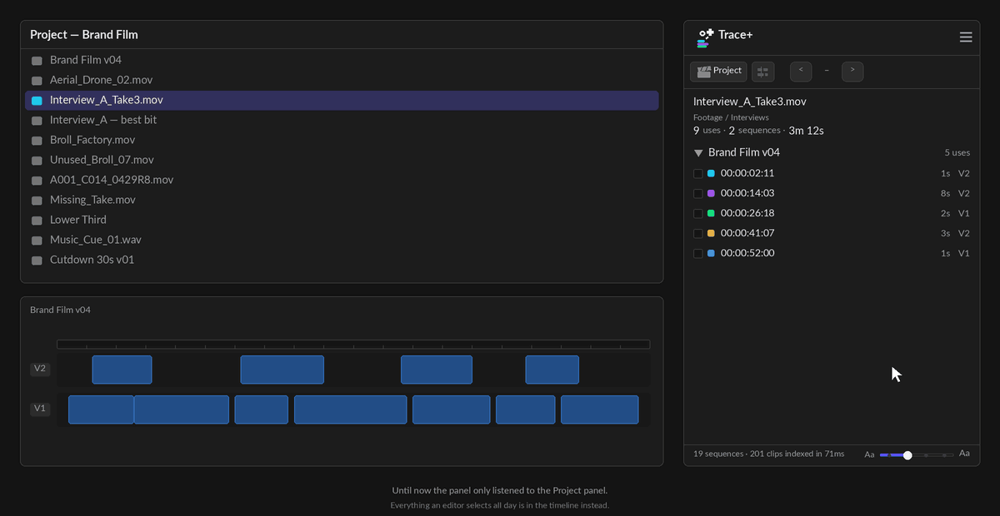
- Select one clip in any sequence and the panel shows every other place that source is used — including the sequences you are not looking at.
- Selecting several clips of the same file is the same question, so the panel answers it. Selecting a mixture is not a question it can answer — it shows one clip's uses — so it keeps showing what you had.
- Clicking away on the timeline does not blank the panel.
It stands down in the project view. It goes grey while you are looking at the whole project, because a timeline clip is a question about one clip and that view is about all of them — acting on it would have to throw you out of the view you chose. Press Back first and it lights again.
On a narrow dock the word goes and the icon stays, the same way Filters behaves.
On a very large project there can be a pause. Trace+ answers from its index, and on a project with fourteen thousand clips on timelines that index takes a few seconds to rebuild after an edit. Click a clip during one of those and nothing happens for a moment — then it appears. The panel keeps asking until the index is ready rather than dropping the question, so there is nothing to press twice.
Trace+ only. The free panel follows the Project panel and nothing else, which is part of what makes it a panel with nothing to set up.
One sequence
Select a sequence — or simply have one open with nothing else selected — and Trace+ lists every clip inside it, ranked by how many times it is used, with the total screen time beside each one.
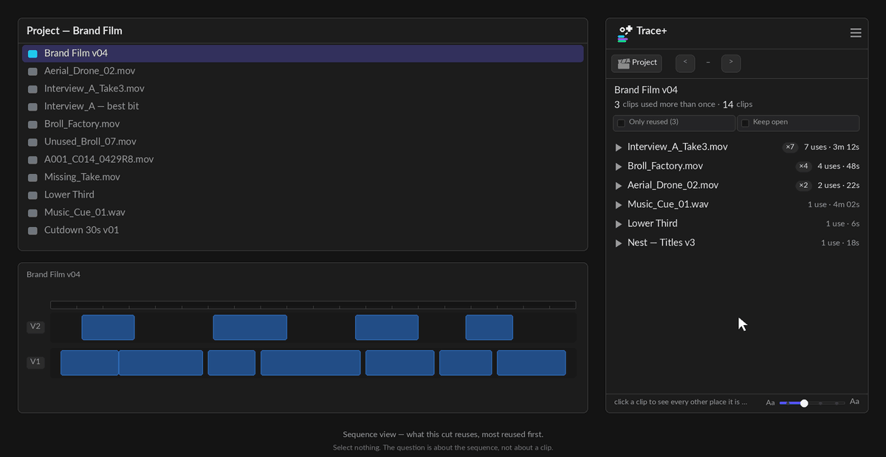
- Click a row to expand it in place and see every individual use with its timecode. Several can be open at once, so comparing two clips is just reading.
- Only reused hides everything used exactly once.
- Opening one row closes the last, so a narrow dock stays readable. Cmd/Ctrl-click a clip name to keep more than one open at a time. There used to be a One clip · Multiple clips button here; the gesture replaced it, and the panel says so in the status line the first time you open a second row.
This is the view for "what am I leaning on too hard?" — the shot you have cut back to eleven times without noticing sits at the top of the list.
The whole project
Press Project — the clapper-board button — with nothing selected. Trace+ walks every bin, measures every media file, and gives you the lot.
The switch above the list flips between Used and Not used. Used is the default because it is the larger and less alarming half.
The filters
| Control | What it does |
|---|---|
| Video · Audio · Stills | Narrows the list by kind. They combine with everything else. |
| Used 2+ | Cycles 2+ → 3+ → 5+ → off. Only applies to the Used side; the count in the label always matches the rows you will get. |
| Offline | Appears only when something is offline. See below. |
| ✓ All | In each section's header — ticks every row in that section. Press it again to clear them. |
Every section has its own ✓ All because the sections answer different questions: somebody labelling the duplicates does not want the unused rows ticked as well.
What counts as unused
This is the number the whole panel rests on, so it is worth knowing exactly what it means.
A media file is unused when no project item pointing at it is on any timeline. Not per import — per file. Import the same interview twice and it is one row; if either copy is cut into a sequence, the file is used.
Three sections under the list exist to keep that number honest, and they are the difference between a tool you can act on and a list you have to double-check:
| Section | What it protects you from |
|---|---|
| Not placed, but their media is used | A master clip sitting on no timeline while a subclip of it is cut into three sequences. Deleting the master would break them. These are never counted as unused. |
| Used only in archived sequences | Used — but only inside a sequence whose name says it is old. True either way, and which one you care about depends on whether you trust the naming. |
| Sequences | Left out entirely. A finished film is not nested inside anything, and a panel that called it unused would be technically right and useless. |
Nests count as use. A clip used only inside a nested sequence that is itself on a timeline is used, and Trace+ follows the chain to say so. A clip inside a nest that is on no timeline is not.
How much disk space it would free
Under the list, Trace+ reports what the unused media comes to on disk — and draws the whole project as two bars: how much of the weight is dead, and what the weight actually is (video, audio, stills, other).
It is bytes, not file counts. Sixty unused stills and one unused ProRes master are the same row count and a thousand times apart on disk.
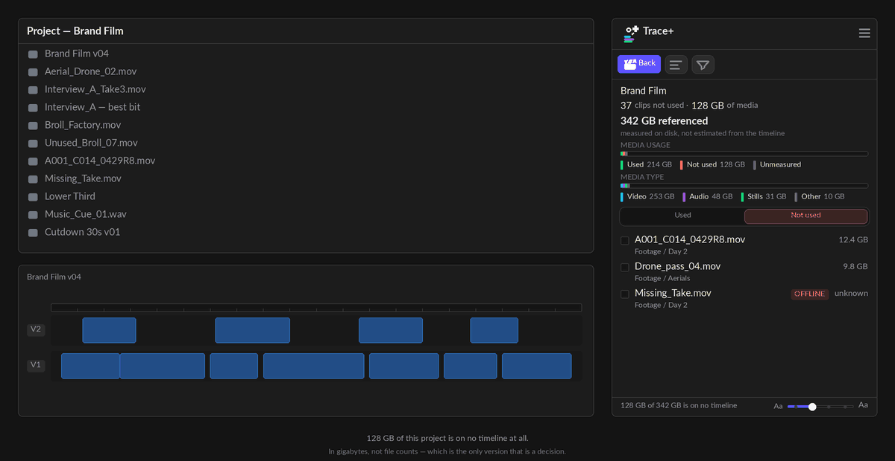
Where a file could not be measured it says so rather than dropping it. A bar that silently ignores what it could not read is a bar that lies about the total. If a whole volume is offline the panel draws the count bars instead and tells you which it is drawing.
Measuring is the slowest thing the panel does — one filesystem call per distinct media file — so the list is drawn first and the weight lands a moment later. The sizes are then cached and only re-measured when the set of media files actually changes. The ☰ > Re-scan project item always re-measures: it is the "I do not believe you" button, and a cache is what it exists to overrule.
Duplicates and empty bins
Two more questions come free off the same walk, and both are end-of-job tidying:
- Imported more than once — the same file sitting in the project two or three times over. Usually harmless, occasionally the reason two editors' versions disagree.
- Empty bins — and "empty" means the whole subtree, not just childless. A bin holding four bins that are themselves empty is the emptiest thing in the project, and it is reported as one row rather than making you delete the leaves four times over.
The spare imports can go. Under the duplicates list is a button reading Remove N spare copies: it removes the project items that point at a file another item already points at. The file on your disk is never touched, every media file always keeps at least one item, and it is one undo step for the lot.
It refuses subclips, and says so on screen. Premiere has no way to tell a subclip from a second import — from the outside they are two items pointing at one file. What they do not share is their in and out points, so Trace+ only removes an item whose extent matches exactly the one it is keeping. Anything covering a different part of the file is a subclip, and the line under the button names how many were left alone and why.
It never removes anything that is used. An item on a timeline is never a candidate, whatever its extent — and the keeper is a used item if the group has one, otherwise the shortest name, which is almost always the original master rather than "…copy 2".
The count is re-measured the moment you press it, not when it was drawn. If you trimmed a subclip in between, it drops out of the plan and the status line says how many actually went.
What about Premiere's own Consolidate Duplicates? It is a different operation: it repoints sequence clips at one master. If your duplicates are unused imports — the usual case after an ingest runs twice — it has nothing to repoint. It also gives you no preview, no count and no explanation when it declines.
Empty bins can be removed. Tick the ones you want gone and press Delete empty bins. It is one undo step for the lot, and there is nothing inside them to lose — that is what "empty" means here.
"Empty" is the whole subtree, not just childless. A bin holding four bins that are themselves empty is the emptiest thing in the project, so it is one row rather than making you delete the leaves four times over. The button counts what actually goes, nested ones included.
Sequences count as contents. A bin holding one sequence is not empty, however much it looks like it.
Offline media
The Offline chip is not a relink tool, and that is deliberate — Premiere's own Link Media dialog does that job properly and a worse copy of a built-in belongs in no product.
What it is for is the question Link Media cannot answer: which of the offline files actually matter. That dialog lists everything that is offline in one flat list with no idea what is in your cut. Press Offline and then Used and Trace+ tells you the three that are in the edit; press Not used and it tells you the twelve that are sitting in bins nobody is waiting for.
That turns a fifteen-file relink hunt into a three-file one. Export CSV gives you the paths and the sequences to send to whoever has the drive.
It is Premiere's answer, not a filesystem check. The chip reads
isOffline(). A file the panel could not measure is a different question with
different causes — a permissions wall, an unmounted volume — and conflating the two would put
working media in a list titled "broken".
Colour labels
Trace+ both shows the label Premiere has given each item and lets you set one.
Reading them
Every row carries a coloured bar beside its name — the same label the Project panel draws in its own colour column. It is a readout, not a control: pressing it does nothing, because the swatch bar is the one way to change a label. Turn it off with ☰ > Settings > Clip labels.
Setting them
The swatch bar sits under the summary. In the project view it labels everything ticked; with a clip selected it labels that clip. Fifteen colours, read from Premiere's own list at run time.
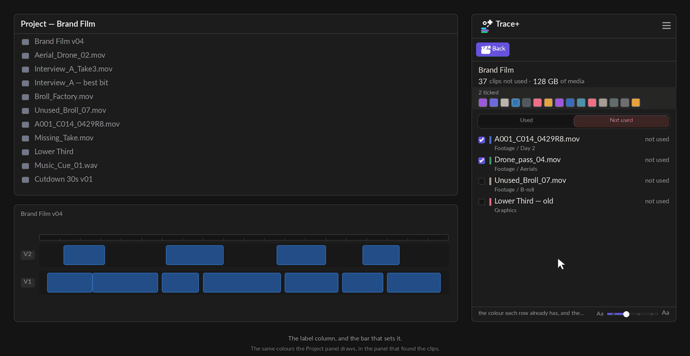
It labels the master clip, and whether the timeline follows is a project setting. There is no API to set the label of a clip already cut into a sequence — re-verified against Premiere's unreleased 26.5 beta — so Trace+ labels the master in the Project panel. Premiere copies a label into an instance when the clip is edited in and then leaves it alone, so changing the master afterwards normally does not recolour the timeline.
One switch changes that, and it is Premiere's, not the panel's:
File > Project Settings > General > “Display the project item’s name and label color for all instances”. Tick it and every instance follows its master, so the swatches here colour the timeline as well. Leave it clear and they colour the Project panel only.
Where to look: the Project panel's Label column first — that is the one place the change always shows. Not the panel's own list, which redraws from the label you just set and so can only ever agree with itself. Trace+ reads the label back from Premiere after setting it, and says so in the status line if the host kept something else.
Labelling fifteen files is one undo step, not fifteen. It replaces whatever label those items had, and the status line says so.
Only the cut you have open
A clip cut into four versions of the same film answers "where is this used" with four groups, and three of them are about a timeline you do not have open. Active sequence only narrows the list to the sequence in front of you, and the label counts what it hid.
It cannot hide everything. If the open sequence does not use this clip the filter stands aside rather than emptying the list — a filter that leaves you with nothing reads as a broken panel. It also only appears when it would actually do something: the open sequence uses this clip and there are uses elsewhere to hide.
It is a clip view control — it narrows one clip's list of uses. All media and the sequence view are already about one project and one cut, so it is not offered there.
Filtering the list
Ticking files one at a time is fine for five and useless for five hundred — which is the size of project this panel exists for. So you narrow the list first, then act on what is left.
Above the list, each chip carrying its own live count:
- Used / Not used — the two halves of the question
- All · Video · Audio · Stills — by media type, read from the file itself
- Used 2+ — cut in twice or more, counting instances rather than sequences. It cycles: 2+ → 3+ → 5+ → off, skipping any step that would empty the list
- Offline — the list a relink session starts from
- Duplicates — files more than one project item points at
- Archived only — used, but only in cuts you have archived
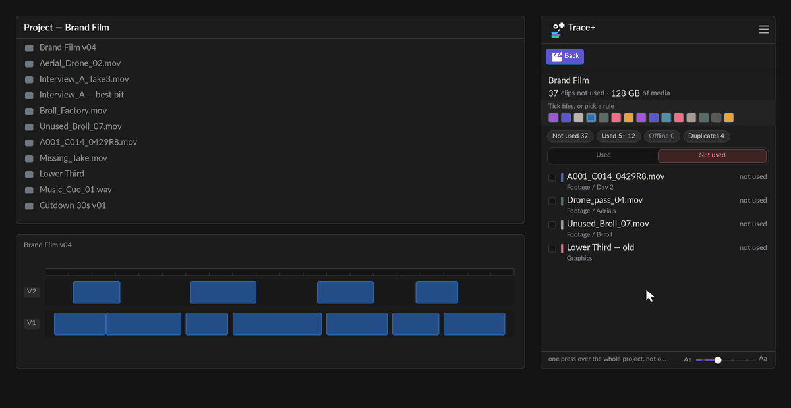
They compose. Every one of them narrows what is already on screen rather than replacing it, so "offline stills that are also duplicated" is one press each — no menu of combinations, and no combination somebody forgot to write.
The four media-type chips work in the open sequence too, not just across the whole project: "which stills are in this cut" is the same question as "which stills are in this project", asked of a smaller list.
A chip that would match nothing is not there at all. A permanently visible "Offline 0" is a filter that can only ever empty the list, and a control that does nothing is a control people press once and stop trusting.
A filter you have forgotten is on is how a clip goes missing — so a chip that is hiding rows is filled in the accent, and the summary above the list says how many it is hiding.
Searching by name
Above the chips there is a search box. Type part of a name and the list narrows to the rows
that carry it — in All media and inside a sequence both.
Matching is case-insensitive and it is a plain "contains", not a fuzzy guess: type
interview and you get every name with interview in it, and nothing
else.
It searches the clip's name — the name on the row, and the names of the
project items behind it. That second half matters more than it sounds: a row in All media is one
media file, while Premiere's own Project panel lists project items, so the name
you read there and type in here can be CLIP_2 copy.mov while the row says
CLIP_2.mov. Both find it.
Nothing else is matched — not the bin, not the sequence. What you can see is what is being matched, so a row that appears is always a row you can explain.
The search sits on top of the chips rather than replacing them, like every other
filter here: Not used + Stills + drone is three
presses and a word.
Select all, Move to _UNUSED and the colour swatches act on the
matches. That is the point of it — search interview, press Select all, colour
twelve clips in one go — but it is also the thing to be careful about. The count beside the box
says how many the term is showing before you press anything, and it names what it is
counting: files in All media, clips in a cut.
Clear it with the ✕, or press Escape while the box has focus. The term survives a re-scan and a change of view, the same way the chips do — "show me the interview rushes" is a question about the footage, not about which list happens to be up.
The funnel folds the search box away with the chips — it is one of the controls that narrows the list, so it goes when they go. If a search is still running when you fold, the dim line that replaces them says so: Filtered · searching “interview” — press to show the filters. Pressing that line brings the box and the chips back together.
Folding the chips away
Most of the time you are reading the list rather than narrowing it, and the chips are two rows of screen you are not using. The funnel beside the view's name folds them away — in a sequence and in All media both.
It is a separate control from the fold beside it, which hides the summary block, because keeping the chips while folding the summary is a real thing to want on a long list of unused media.
If a filter is still on, one dim line says which. Folding a chip row while one of its chips is switched on would otherwise leave a list that is short for a reason you cannot see — and pressing that line brings the chips straight back.
Used / Not used does not fold. It is the switch between the two lists rather than a filter on one of them, and a panel that folded away its own primary control would be a list nobody could change.
It will not fold while you are comparing cuts. Stop comparing lives on one of those rows and is the only way out of a compared list.
Hiding rows you have dealt with
Filters answer “show me this kind of thing”. Working through a long unused list is the other job: you have looked at a row, decided about it, and you never want to see it again this afternoon.
Every row carries a small eye at its right end. Press it and the row leaves the list. Tick several rows first and pressing any ticked row's eye hides all of them — the tooltip changes to say so before you press, because a control that quietly does six things while saying “this row” is a surprise you cannot undo by pressing it again.
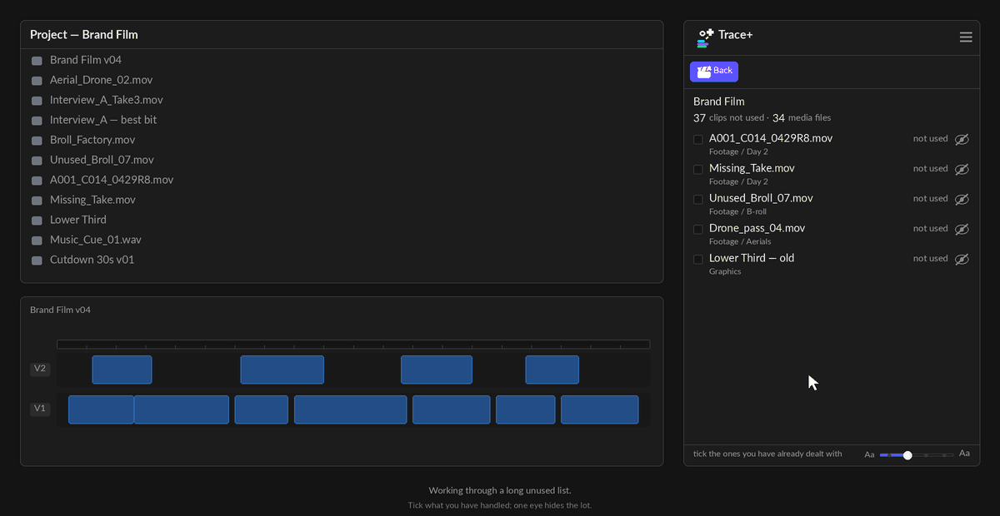
Nothing is deleted and nothing is moved. Hiding is a view, not an action on your project — the files stay exactly where they are, and the count above the list still counts them.
A strip says how many are hidden, and carries the way back. It is on screen whenever anything is hidden, in every state, because a hand-hide leaves nothing else on screen to explain a short list. Unhide all is on the strip; the Hidden chip brings them back dimmed so you can restore them one at a time.
It is per section, in the project view. Hiding is about the list you are working through, so it applies to the sections of the project view rather than to a clip's uses.
Repeats and sections
“Nine uses” and “nine different bits of footage” are not the same sentence. Nine uses of one three-second cutaway and nine moments of an interview are opposite facts about a job, and the use count alone cannot tell them apart.
So when they differ, the totals line says both: 9 uses · 4 sections · 2 sequences. Four sections means four distinct stretches of the source were used; the other five uses are repeats of footage already counted.
And every use of a clip that is used more than once carries a badge saying which kind it is:
- REPEAT — this footage, again. The same stretch of the source, laid down a second time.
- OTHER — the same clip, a different part of it.
- neither — this clip is used once.
Seven uses of one heartbeat effect might be seven different hits, or the same one-and-a-half seconds seven times, and those are opposite facts about a sound effect. Now the row says which.
Seeing one half of them
Above the list there is one more control: press it and it cycles Show repeats → Show other parts → Show all, each carrying the number you would get. It appears only when there are both kinds to separate — a clip whose uses are all repeats has nothing to narrow to.
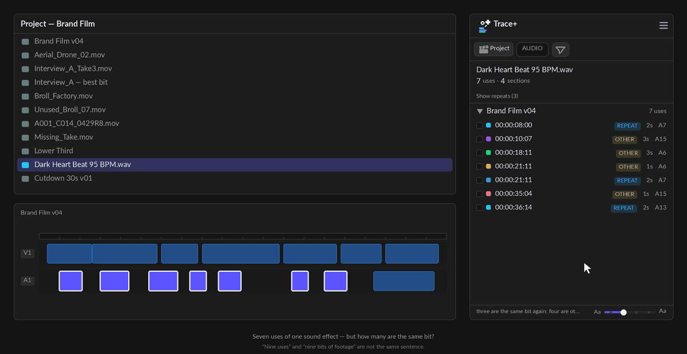
It is not shown when it would say nothing. A clip cut into nine different places reads 9 uses with no section count, because “9 uses · 9 sections” on every clip is a line people stop reading.
Every member of a group is badged, not just the later ones. Two uses of one section are repeats of each other — picking one to call the original would invent an order your project does not have.
REPEAT means nearly the same range, not merely an overlap. The test is whether the two uses share at least nine tenths of the longer of them, so re-trimming a cutaway by a few frames is still a repeat — while a short pick-up taken out of a long take is an OTHER, which is what it is.
OTHER does not need an overlap at all. It is not “nearly a repeat”; it is the other answer to the same question, and two uses that share no footage are the clearest case of it.
What each row is
A filename cannot tell you what a thing is. A001_C014_0429R8 is a
video, a still, or a whole nested sequence depending on a project nobody can see from the name.
So every row carries a label: VIDEO, AUDIO, STILL, NEST — in the same colours the disk-space breakdown uses, so cyan means video in both places rather than in one.
Two of them are warnings rather than descriptions. MULTICAM and MERGED mark the containers nothing in Premiere's API can see inside: a file used only through one of them looks unused to any tool, including this one. Trace+ says so on the row rather than reporting a number that is too low and letting you archive the interview audio.
The tag button in the toolbar turns them off — the luggage tag, next to the filter funnel. On a narrow dock the tag and the filename compete for the same forty characters, which is why it is a switch and not a decision; it sits on the toolbar rather than in Settings because it is a thing you flick, not a thing you set once. Like the folds beside it, it lights while it is hiding something.
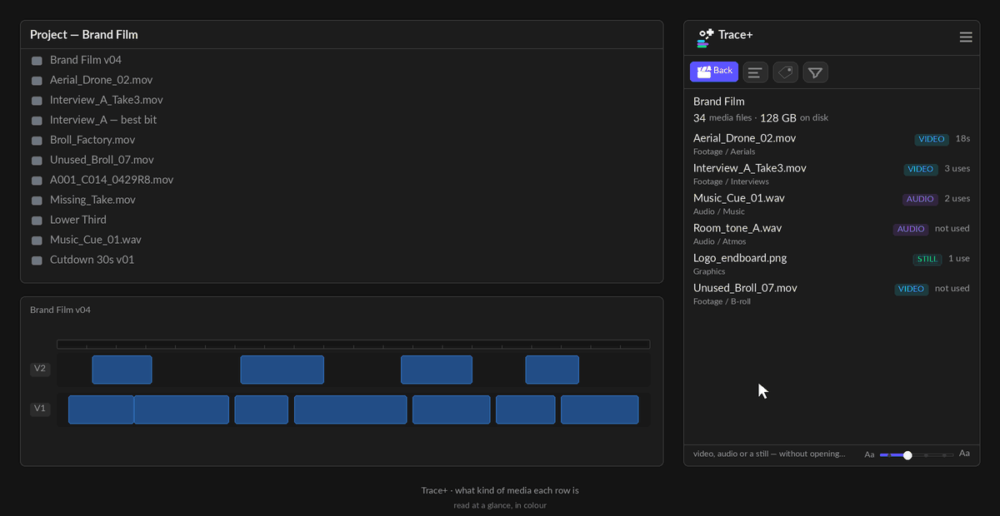
Compare two cuts
What is in v04 that is not in v03? Premiere cannot answer that, and neither can anything else on the market. The only honest way to know today is to scrub both.
Open a sequence, then press Compare cuts. Trace+ lists your other sequences; pick one and you get three lists:
- Only in <this cut> — clips you have added
- Only in <the other cut> — clips that are gone
- In both, cut differently — the same clip, a different number of times,
shown as
3 → 1
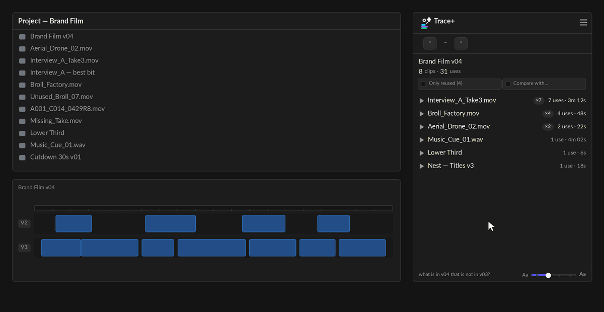
The sections are named after your sequences, never "added" and "removed". Which cut is newer is your knowledge, not the panel's — v03 could easily be the one you have open.
It compares clips, not edit points. "In both" means the clip appears in both cuts, not that it is cut the same way. A clip used three times in v03 and once in v04 is in both, and the counts say what happened. Comparing edit points instead would answer a far less useful question: every ripple would read as a change to everything after it.
Every row goes somewhere. Click one to jump to that clip on the timeline — in the cut it actually lives in. Shift-click opens it in the Source Monitor. Tick a row to select every use of that clip, or press Select all under a section to take the lot.
Selecting is per section. Premiere cannot hold a selection spanning two sequences, and the two "only in" lists are about different cuts — so one button across the whole comparison would silently drop half of what it claimed.
Because a row click makes a real Premiere selection, moving a clip between cuts is Cmd-C in one sequence and Cmd-V in the other. Trace+ does the finding; Premiere does the copying.
Markers
The marker button in the title row — the flag shape — drops a marker over every use on screen. Unlike a selection, a marker survives you clicking somewhere else: it is the persistent version of "highlight every use".
Tick some rows first and it marks only those. The tick boxes are one
selection, used by everything: the timeline selection, Move, Put back and the marker button. With
nothing ticked the button still marks every use on screen, which is the quick gesture — open a
clip, press the flag. Removing markers ignores the ticks on purpose: it is the tidy-up, so it
clears every Trace · marker in the view and never touches one you wrote yourself.
What it marks depends on where you are:
| In this view | It marks |
|---|---|
| One clip | Every use of that clip, named after it |
| One sequence | Every use of every clip in the list, each marker named after its own clip. Only reused narrows this too — if you filtered the list, it marks what is left. |
| The whole project | Nothing. Markers go on a timeline, and this view lists media files. The panel says so rather than doing nothing. |
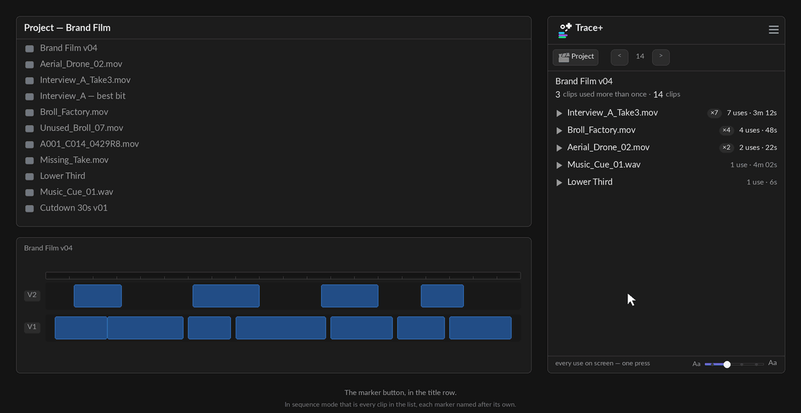
One undo step per sequence, and the panel says how many before you press it. Markers for nine uses across four sequences is four undo steps, not one — each sequence's markers are their own object and Premiere cannot group them.
Tick some uses first and it marks only those. The tick boxes are one selection, used by the timeline selection, Move, Put back and the marker button alike. With nothing ticked it marks every use on screen, which is the quick gesture — open a clip, press the flag.
And alt-click the marker button takes them off again. Same scope as marking — whichever sequences the current view is about — so mark from a sequence view, unmark from the same view, and you are exactly where you started.
It removes markers named Trace · … and nothing else, ever. Your own markers —
notes, VFX flags, music cues — sit in the same list and are never touched. The status line says so
after every run.
Set a colour in ☰ > Settings > Marker colour and each sequence costs a second step, because a marker does not exist until its transaction has committed and its colour has to be set afterwards. On the default — Premiere's own colour — you pay nothing for a feature you did not ask for. Pressing the button twice never repaints the first run's markers.
Move to a bin
Tick the rows you want out of your way and press the Move button. It names the
count, the destination and the undo cost before you press it — Move 47 to _OFFLINE
— so there is nothing to confirm afterwards.
The bin is named after the filter that found the rows. With Offline on it
reads _OFFLINE; otherwise it is whatever ☰ > Settings calls the
archive, _UNUSED by default. Nothing to type, and the name always describes what is
in it.
To send them somewhere else, press the caret beside the button. It lists the filter’s own bin, the archive from Settings, bins Trace+ has filed into before, and every top-level bin already in your project — then New bin… at the foot, which opens a name box above the list. Enter accepts it, Esc cancels.
The caret is a separate control from the button on purpose: one target that sometimes files forty clips and sometimes opens a menu is a mis-click waiting to happen.
- It works on any list, not just Not used. Offline media is very often still in the cut, so filing it away is exactly the case a "not used only" button could never handle.
- Nothing is deleted, ever, and nothing is hidden from Premiere. A move is a move: the files stay in the project, in a bin, and Cmd/Ctrl-Z takes it back.
- Put back sees every bin Trace+ has filed into, not just the one in Settings. Whatever the panel files, the panel can return.
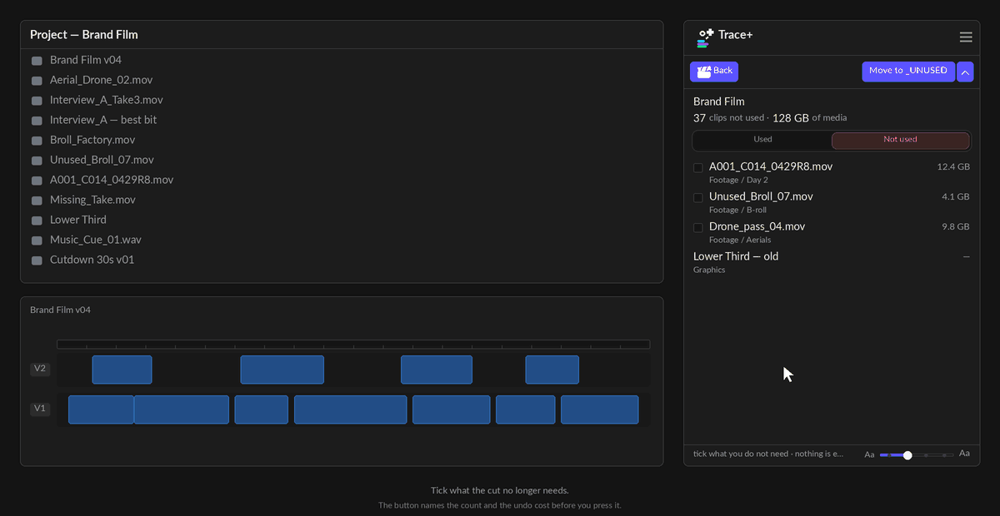
It only ever remembers bins it filed into itself. Trace+ never decides that a bin
looks like an archive — that way it would offer to empty a folder you named
_OLD for your own reasons. The list is a record of what it did, not a guess.
Two shapes, in ☰ > Settings:
| Mirror | Recreates each item's bin path inside the archive —
_UNUSED/Footage/Day 2. Slower to look at, and it is the only version that can be
undone by the panel later, because the path IS the record of where the clip came
from. |
|---|---|
| Flat | Everything straight into _UNUSED. Tidier, and there is no trail
back — those files return to the top level if you put them back. |
You can rename the bin from _UNUSED to anything you like in the same place.
It refuses to file away media that is in use. Not "warns" — refuses, and counts the refusal in the status line. Filing away footage from under a live edit is the one mistake this panel exists to prevent.
Archived items get a tan colour label so they are obvious in the Project panel. Nothing is copied, nothing leaves the project, and nothing is deleted — Cmd/Ctrl-Z undoes it like any other edit.
Putting it back
The day one of those clips gets cut back into a sequence, your project says "archived" about footage that is on air. Trace+ notices.
In the project view, the archived files appear with a Used again badge when the index finds them back on a timeline. Tick what you want and press Put back.
Or let it happen on its own
Settings ▸ Put used clips back ▸ Auto does the same thing without the press: when a clip in the archive turns up on a timeline again, it goes straight back to the bin it came from.
- It is off by default, and that is deliberate. It is the only setting in the panel that writes to your project without a press, and a panel that rearranges a Project panel you did not ask it to rearrange is one you stop trusting. Turning it on is a choice you make once.
- It only ever moves what Trace+ filed. Same contract as the button — nothing
outside
_UNUSEDis touched, ever. - It runs whatever view you are in. It used to need All media open, which made it useless for the moment it exists for — pulling an archived clip back into a cut is something you do while looking at the cut. It now watches in the background from any view and files the clip the moment the index sees it back on a timeline.
- It learns what is in the archive once per session. Turning the setting on does not act on what is already filed until Trace+ has read the archive once, which happens the first time it looks; after that every check is free.
- An item that will not move is left alone and not retried, and the status line says how many. A tidy-up that keeps failing quietly is worse than one that does not run.
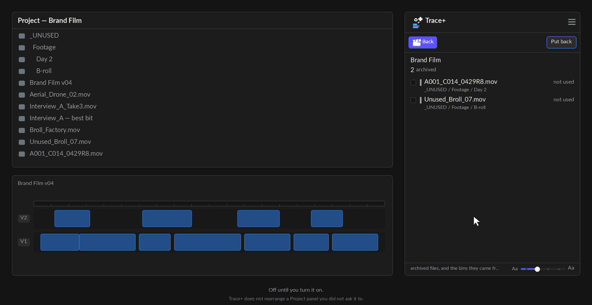
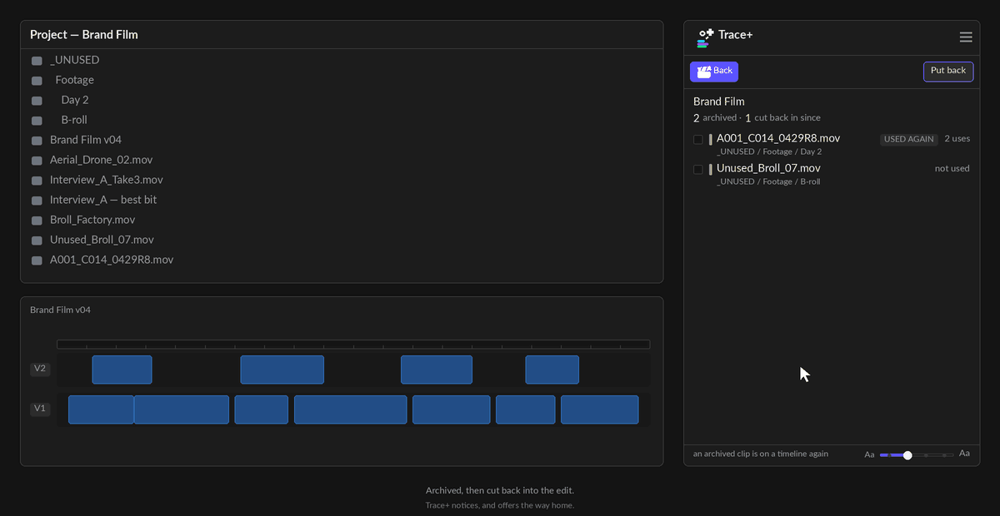
- Each item returns to the bin it came from — read out of the archive path itself. Nothing is remembered anywhere, which is why it still works on another machine, in another session, after somebody has dragged things around by hand.
- If the original bin was deleted while the media sat in the archive, it is rebuilt.
- Anything filed flat, or that lived at the top level to begin with, goes back to the top level. Those two are indistinguishable from here, and the panel says how many.
- The empty bins go with it. Filing away creates bins; putting everything back used to leave them standing, empty, mirroring a structure that now existed twice. They are cleaned up — but only the ones that are genuinely empty, subtree and all.
It does not clear the tan label. The colour says "this was archived", and quietly changing a label you may since have chosen for your own reasons is not that button's business.
Rename the archive bin after filing and the trail is broken. Nothing in the project records which bin used to be the archive. The panel says so where the name is changed.
Selecting and the Source Monitor
Everything the free panel does, unchanged. Press Select all N in this sequence and every use becomes a real Premiere selection at the same moment — nudge them, delete them, apply an effect. Shift-click or double-click any use to open it in the Source Monitor with that use set as in and out.
A selection cannot span two sequences. Premiere's own limit, not the panel's. Picking uses in a second sequence clears the first set, and the status line says it happened.
Copying and exporting
☰ > Copy list puts what is on screen on the clipboard as plain text — whichever view you are in, filters and all. It is what the list is showing, not what it could show, so a filtered list copies filtered.
☰ > Export CSV is the other half of that: a file a spreadsheet opens without anybody repairing it first. Same rule — it exports what is on screen — and what you get depends on the view you are in, because the three views answer three questions:
| In this view | You get |
|---|---|
| One clip | Every use: sequence, start, duration, track, and the nest it came through |
| One sequence | A cue sheet — every clip in the cut, how many times, its screen time, and what percentage of the sequence that is |
| The whole project | Every media file: bin, kind, used or not, use and sequence counts, size in bytes, and the path on disk |
Screen time is the merged span, not the sum of the uses. Two uses that overlap on V1 and V2 are one moment on screen. Adding them would tell a music supervisor that a 30-second cut contains 40 seconds of one track — so the cue sheet refuses to, while still reporting the honest number of uses.
If Premiere cannot open a save dialog, the CSV goes to the clipboard instead and the status line says that is what happened — never a file you then cannot find.
How much to show
☰ > Settings > Detail has two levels, and they change how tight the rows are as well as how much each one says.
| Clean | Name, count and timecodes. Tighter rows, and everything you could have got by clicking is gone. For a narrow dock down the side of the screen. |
|---|---|
| Detailed | Everything: the bin path, the coverage bar, durations and tracks, the source in and out of every use, the nest it came through, and the media's path on disk. |
Set it to Clean on a narrow dock and Detailed when you are actually investigating something. It is one press either way.
Neither level hides the status line. The strip along the bottom — how many sequences were indexed and how long it took, what is being scanned right now, and the confirmation after anything is moved, marked or labelled — is there at both levels. Detail is about how much each row says, not about how much the panel tells you.
The one thing that does hide it is docking the panel very short, where there is no room for a strip at all.
Every setting
☰ > Settings. The window sizes itself to what is in it, and everything is saved for next time. Point at any setting and the strip along the bottom says what it does — the explanations live in one place instead of appearing as a tooltip over the control you are trying to read.
Text size is not in Settings. It is a slider at the right-hand end of the status strip along the bottom of the panel —
Aa at each end, four steps. Click anywhere on the rail, or focus it and use the arrow
keys; the list holds its place while the size changes, so you do not lose where you were. A panel
docked down the side of a 4K display draws 11px labels at about five millimetres, and this one is
read all day.
| Setting | What it does |
|---|---|
| Unused layout | Mirror or Flat — see Move to _UNUSED. Mirror is the one with a way back. |
| File unused into | The archive bin's name. _UNUSED by
default. |
| Detail | Clean or Detailed — see above. |
| Times | Timecode — what you say out loud — or frames, which is what a VFX list asks for. Applies to Copy list too. |
| Label picker | Shows or hides the swatch bar you press to apply a colour label. |
| Clip labels | Shows or hides each row's existing label — the readout. Two different settings on purpose: wanting to see the organisation you already did, without the temptation to change it, is a real preference. |
| Tags | Not in Settings — it is the tag button in the toolbar, next to the filter funnel. It shows or hides the VIDEO / AUDIO / STILL / NEST / MULTICAM tags, and lights while they are hidden. See What each row is. |
| Put used clips back | Auto or
Manual. Auto is the only thing in the panel that writes to your project
without a press: when a clip you filed into _UNUSED is cut back into a timeline,
it returns to the bin it came from. Off by default — see
Putting it back. |
| Marker colour | Premiere's own colour by default — press a swatch to change it, and the name of the one you are on is written beside them. Choosing a colour costs a second undo step per sequence, and the panel says so where the choice is made. |
The label picker only appears once something is ticked. It used to sit there permanently, because the label RULES lived inside it and they were how you chose what got coloured. The rules were removed in 0.71.0 — three of the five said exactly what a filter chip above them said — so the bar went back to appearing when there is a selection and nowhere else. In sequence mode it colours the clips you have ticked; in All media, the files.
Every gesture
| Do this | Get this |
|---|---|
| Click a sequence name | Opens that group and closes the others, so the list stays a list. Cmd / Ctrl-click a name to keep more than one open at a time |
| Click a use | Jump the playhead there and select that clip |
| Click a clip row (sequence view) | Expand it in place to show every use |
| Shift-click, or double-click | Open in the Source Monitor, with that use set as in/out |
| Cmd / Ctrl-click, or the tick box | Add or remove from the selection. On a clip row it picks every one of its uses at once |
| Alt-click | Find in Project — copies the clip's name for the Project panel's Find box (Cmd/Ctrl-F). The Find button beside the bin path does the same thing |
| Click a row in All media | Opens the cut that uses it — the busiest one, with the status line saying which and how many others there were |
| The tick box on a clip row | Selects every use of that clip in the timeline at once. Half-filled means some of its uses are selected, not all |
| The arrows | Step through every use on screen |
Shift and double-click do the same thing deliberately, so the Source Monitor is reachable whichever one you reach for.
The same gesture means the same thing in every list. Plain click opens, Alt copies the name, Shift goes to the Source Monitor. Until 0.74.0 a plain click in All media copied the name instead — the same press doing two different things depending which list you were in, and the surprising one quietly replaced your clipboard.
Docking
Trace+ drops columns as it narrows rather than squashing them.
| A normal column | Everything: totals, bars, filters, the bin path and the status line. |
|---|---|
| A narrow strip | Drops the duration column and wraps the toolbar onto two lines. The timecode still says where and the track still says which. |
| A short bar under the timeline | Drops the bin path, the filters and the status line so the list keeps the height. |
Below roughly 180px wide there is nothing left to give up. If you live in a narrow dock, set Detail to Clean.
Updates and About
Trace+ checks once a day whether a newer version exists and shows a small notice in the panel if so. Help and licence… > Check for updates asks immediately.
☰ > Help and licence… shows the version you are running — the first thing to quote if you report a problem — along with your licence and a link back to this site.
☰ > Tour re-opens the short tour that runs the first time you open the panel.
The scan report
☰ > Scan report prints exactly what the panel did: how many sequences and track items it read, how long the index took, how many media files it measured and by which route, how many times it has rebuilt, and anything that went wrong along the way.
It has its own bar with Copy and Hide on it, and ☰ > Copy scan report does the same thing from the menu — which is there so that copying a support report never depends on one row of the panel drawing.
Opening it does not take your clipboard. It used to, and a diagnostic is exactly the thing you open in the middle of doing something else.
If you report a problem, send this. It answers in one paste the questions that otherwise take four emails.
It contains your file paths. That is the one place they appear, and it is why the report is something you press rather than something the panel sends.
Release history
Loading releases…
What Trace+ can't do
Not oversights. Premiere's plugin API genuinely does not offer these, and no plugin can do them.
| Why | |
|---|---|
| Reveal a clip in the Project panel | The Project panel's selection is
read-only to plugins — the timeline's is read-write, and that split is
deliberate rather than a gap waiting on an update. Re-checked five times, most recently against
the unreleased 26.5 beta: no reveal, no scrollTo, no way to set a
Project panel selection, and Premiere's own Reveal in Project command cannot be
triggered either.So Trace+ does the two halves it can: it shows you the bin under the clip name, and Find in Project — the button beside it, or Alt-click on any row — copies the exact name for the Project panel's Find box. It is called Find rather than Reveal because that is what it does. |
| Colour a clip that is already in the timeline | Colour labels are project-item only. Labelling the master is the closest thing, and Premiere's own behaviour carries it to the instances. See Colour labels. |
| Delete anything | Deliberate, not missing. The most destructive thing in the panel moves items into a bin. |
| Zoom or scroll the timeline | No API. Moving the playhead is the only navigation, and Premiere scrolls to follow it. |
| Resolve merged or multicam clips | Nothing exists for reading the sources inside one — no plugin can do it. Trace+ flags them rather than guessing, and warns when a project contains any that are in use, because a file used only through a merged clip looks unused here. See What counts as unused. |
| Appear in Premiere's own Keyboard Shortcuts list | A UXP plugin's
commands cannot be bound in Edit > Keyboard Shortcuts, and Adobe staff confirmed in
April 2026 that this is not planned. This is narrower than "no shortcuts at all", which is what most people will tell you. A UXP hybrid plugin — one carrying a small native add-on, Premiere 26.2 and up — can register a shortcut with the operating system, which is how the plugins that do have one manage it. Trace+ does not ship a native add-on today. |
| Search other or unopened projects | The API cannot reach a project that is not open. Productions are out for the same reason. |
| Read what is inside a file | It reads file sizes and nothing else. See Privacy. |
FAQ
Do I need Trace as well?
No. Trace+ contains everything Trace does. Having both installed is fine and they do not interfere, but one panel is enough.
Is it safe to run on a job that is on air?
Reading is always safe — it opens nothing and changes nothing. The four things that write to your project are colour labels, markers, Move to _UNUSED and Put back, and all four are ordinary Premiere edits that Cmd/Ctrl-Z undoes. The panel names the undo cost on the button before you press it.
Why is the first scan slow?
It reads every track item in every sequence, then walks every bin, then measures every media file on disk. On a 500-clip project that is a few seconds; on a network volume the measuring is the slow part. After that it re-uses what it has and only re-measures when the media actually changes.
It says a clip is unused and I am sure it is in the cut
Four things do this, in order of likelihood — see Troubleshooting.
Can I change the archive bin's name?
Yes, in ☰ > Settings. Do it before you file anything: rename it afterwards and Put back can no longer find what you archived.
Does it work with Productions?
It reads the project that is open. It cannot see the other projects in a Production, because the API cannot reach a project that is not open.
What happens when my licence expires or I stop paying?
Nothing you have already done is affected — labels, markers and archived bins are ordinary parts of your project and belong to you. The panel returns to its locked state and the paid views stop drawing.
Troubleshooting
Trace+ isn't in the Window menu
- Premiere must be 25.6.0 or newer. Check About Premiere Pro.
- Restart Premiere after installing — UXP plugins are only read at launch.
- Look under Window > UXP Plugins, not Extensions. That submenu is for the older CEP kind.
It says a clip is unused and I am sure it is in the cut
- The uses are in archived sequences. Look under Used only in archived sequences, and untick Hide old cuts in the clip view.
- It is a different import of the same file. Check Imported more than once — Trace+ counts by file, but two files with the same name are two files.
- It is a merged or multicam clip. Trace+ flags this under the totals.
- The sequence has never been opened in this session. Press the circular arrow in the title row.
The weight says "unmeasured" for a lot of files
Either the volume is offline, or Premiere has not been granted access to it. The scan report lists which route the panel used to reach the files and what each one did — that is the fastest way to tell the two apart.
I pressed a colour and nothing changed
Look at the Project panel's Label column, not the timeline. If the clip is already cut into a sequence and somebody set that instance's colour by hand, the override wins and no plugin can change it.
Move to _UNUSED refused some of my rows
Their media is in use somewhere — that refusal is the point. The status line says how many were refused. If you disagree, the row will be in Not placed, but their media is used.
The numbers look out of date
Trace+ re-scans on its own as you edit, but ☰ > Re-scan project forces it — and re-measures the media, which the automatic scan deliberately does not.
The panel is squashed or the buttons overlap
Drag the dock wider or taller, and set Detail to Clean. Below roughly 180px wide there is nothing left to give up.
Privacy
Trace+ asks for full filesystem access. That is a bigger ask than the free panel makes, and it deserves a plain answer.
It is for one thing: reading how big your media files are, so the panel can tell you what your unused media weighs. It reads file sizes. It does not read file contents, and it never uploads anything.
What leaves your machine, ever:
- Licence activation — your key and a machine identifier, to the licence server, so seats can be counted. Once, at activation, and again if you press Remove.
- The update check — a request for the current version number, once a day.
Nothing else. No project names, no file paths, no media, no analytics. The scan report is the one place your file paths appear, and it is something you press and paste yourself.
Support
Email hello@nkcourses.co.uk. Include the version from ☰ > Help and licence…, say what you selected and what you expected — and paste the scan report. That is the fastest possible bug report and it usually answers the question on its own.